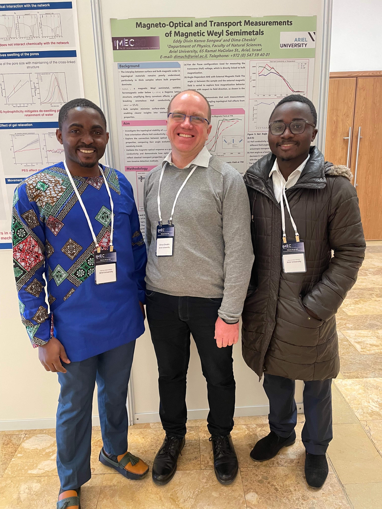

<div class="row text-center"> <!-- row of header -->
  <div class="container-fluid" style="text-align: center;">
    <!-- Centered second image -->
    
  </div>
</div> <!-- end of row of header -->

<!--
  Everything below this line is commented out as requested
  --------------------------------------------------------
<div class="row">  <!-- row of first page content -->
  <div class="col-md-6"> <!-- news -->
    <h1>News</h1>
    <div class="more">
      <ul class="navigate">
        {% assign lastyear = nil %}
        {% for post in site.posts limit:5 %}
        {% capture year %}{{ post.date | date: '%Y' }}{% endcapture %}
        {% if year != lastyear %}
        <li><a href="{{ site.url }}{{ site.baseurl }}/posts/index.html#year{{ year }}">{{ year }}</a></li>
        {% assign lastyear = year %}
        {% endif %}
        {% endfor %}
        <li><a href="{{ site.url }}{{ site.baseurl }}/posts/index.html">All</a></li>
      </ul>
    </div>
    <div class="container-fluid">
      {% for post in site.posts limit:5 %}
      <h3><a href="{{ site.url }}{{ site.baseurl }}{{ post.url }}">{{ post.title }}</a><br/> 
      <small class="date">{{ post.date | date_to_string }}</small></h3>
      {{ post.content }}
      {% endfor %}
    </div>
  </div> <!--end of news-->

  <div class="col-md-6"> <!-- publications -->
    <h1>Recent Publications</h1>
    <div class="more">
      <ul class="navigate">
        <li><a href="{{ site.url }}{{ site.baseurl }}/publications/index.html">See more</a></li>
      </ul>
    </div>
    <textarea id="bibtex_input" style="display:none;"> <!--used in the bib reader-->
    </textarea>
    <div class="bibtex_template" style="display:none; padding:0.8em;"> <!--bib tex template-->
      ...
    </div>
    <div class="container-fluid">
      <div id="bibtex_display"></div>
    </div>
  </div> <!-- end of publications -->
</div> <!-- end of the row of first page content -->
--------------------------------------------------------
-->
